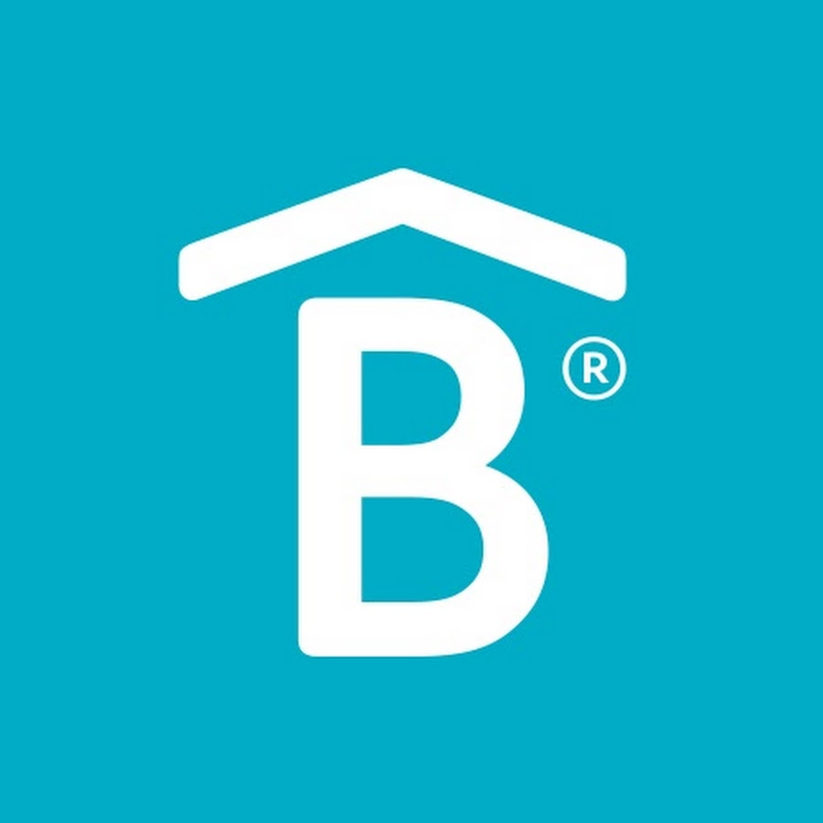

BetterWare
RECLUTAMIENTO
Ultimas noticias

Teatro
Teatro ofrece una carrera de 4 años con el objetivo de formar, desde una perspectiva socio constructivista hombres y mujeres de teatro profesionales de la actuación, creativos y autogestivos, que participen críticamente en la vida cultural del entorno en el que se desempeñen.
AL terminar
Al concluir tus estudios tendrás aptitudes, conocimientos, habilidades y valores para desempeñarte profesionalmente en el campo de la creación teatral con énfasis en la actuación. Contarás con preparación teórica, técnica, intelectual y física para abordar propuestas escénicas, a las que podrás aportar la visión de actor creador en cualquiera de los géneros y estilos del teatro.
Nuevos Integrantes
Inicio
Como aspirante debes contar con conocimientos básicos del arte teatral y de cultura general, tener capacidades físicas y aptitudes necesarias para desarrollar un entrenamiento corporal y vocal intensivo y permanente. También deberás demostrar habilidades expresivas y creativas, fluidez y comprensión en la lectura así como buena ortografía, redacción y disposición para el trabajo colaborativo.Formamos en un marco universitario contemporáneo, creadores, docentes e investigadores en el campo del arte y sus disciplinas afines, con solidez profesional, creatividad, espíritu crítico y sentido ético. Contribuimos, a través del desarrollo del arte y la cultura, a la atención de necesidades sociales y educativas y a la formación de públicos.
Lectura y redacción II
Consolidar un espacio formativo con presencia internacional vinculado con los procesos nacionales y locales de profesionalización y difusión de las artes.
Consolidar un espacio formativo con presencia internacional vinculado con los procesos nacionales y locales de profesionalización y difusión de las artes.
Proximos eventos
EVENTO 1
PRIMER SEMESTRE
Actuación: Indeterminación
Técnica vocal
Lenguaje musical I
Acondicionamiento corporal I
Anatomía del movimiento I
Iniciación a las técnicas de investigación I
Historia del teatro I
Lectura y redacción I
EVENTO 2
SEGUNDO SEMESTRE
Herramientas de construcción poética del actor
Ortofonía
Lenguaje musical II
Acondicionamiento corporal II
Anatomía del movimiento II
Iniciación a las técnicas de investigación II
Historia del teatro II
Lectura y redacción II